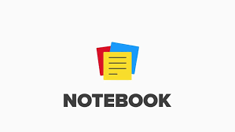

Note Pro
00:00:00
New
Open
Save
as .TXT
as .DOCX
Print
Cut
Copy
Paste
Times New Roman
Inter
Roboto
Open Sans
Lato
Montserrat
Poppins
Playfair Display
Merriweather
Nunito
Raleway
Ubuntu
Oswald
PT Sans
Roboto Mono
Lora
Mulish
Quicksand
Fira Sans
Work Sans
Barlow
Inconsolata
Dosis
Cabin
Dancing Script
Pacifico
12px
14px
16px
18px
20px
24px
28px
32px
36px
48px
64px